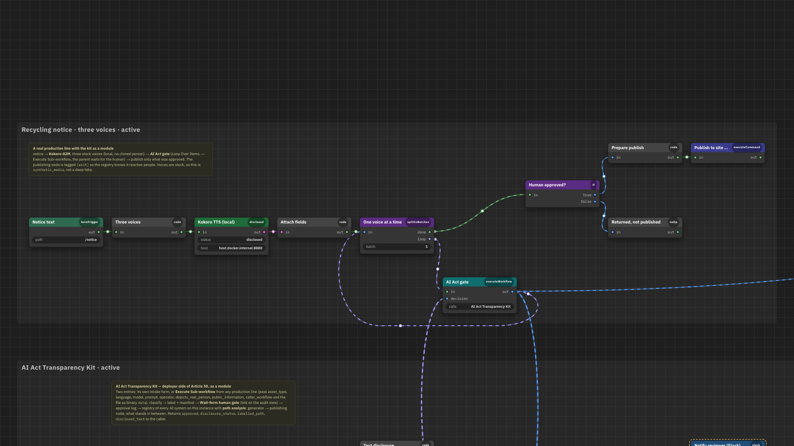

AI-assisted production lines · human approval gates · EU AI Act
Every AI asset stops at a named human.
The auditor's page fills itself.
Compliance as a property of the production line, not a report written before the audit. An n8n module you drop in front of any publishing step: it classifies the asset under Article 50, labels it, writes provenance, waits for a person, logs the decision, and keeps a registry of every AI system on the instance with a verdict on each path to the public.
One thesis, two lines
The same pattern twice: a system does the volume, a person approves, the numbers are reported in the units of the operation. The first line was pitched before it existed; the second runs and produces evidence while it does.

Line 1 · the pitch
Ad-creative production at volume
Brief → concepts → static and video branches → agents on the gates → one human inbox for exceptions. Drawn for a test assignment in an evening; the pattern that produced 300 creatives a day where one was made by hand.

Line 2 · the governance
The same gate, now producing evidence
Text → three synthetic voices → AI Act gate → publish only what a person approved. The registry reads every workflow on the instance and flags the ones where AI output reaches people with no disclosure and no human.
The map that sold the first line is the same tool that now draws the second from a live workflow export: the picture is generated from the n8n JSON and the registry, not drawn.
The map
Keys 1–5 fly between views: everything, the production line, the kit, the flagged sample, the Auditor block with its page. Press A for flow, H to hide the chrome.
What the auditor reads
Five blocks, filled from files the line writes. Nothing typed by hand except the reviewer's decision.


Deep fakes as the Act defines them
Art. 3(60): generated or manipulated content resembling a real person, object, place or event that would appear authentic. No person needed. The intake asks what is shown, whether the footage was altered, and whether it is an artistic or satirical work; the label follows.


Systems, not assets: emotion recognition and biometric categorisation must inform the people exposed (Art. 50(3)), chatbots must say they are AI (Art. 50(1)). The registry flags both from the workflow graph, publishing or not.
How a line is judged
The Act does not regulate links between nodes; it regulates what reaches people. From every node that calls a model, every path forward to a publishing node is walked, and what stood in between decides the verdict.
| Verdict | Rule | For the auditor |
|---|---|---|
| internal | no path reaches a publishing node | no Art. 50 duty, recorded anyway |
| disclosed | every path passes a disclosure step | disclosure is built into the line |
| editorial | no disclosure step, but every path passes a human gate | text only, Art. 50(4) §2, with a named responsible person |
| verify | a destination that may or may not reach people | a person decides; tag the node |
| uncovered | a path reaches people with neither | AI content goes out with no disclosure and no responsible person |
| likeness | a face or voice generator reaches people without a disclosure step | deep fakes need disclosure regardless of a gate, Art. 50(4) §1 |
| inform | emotion recognition or biometric categorisation runs on people who are not told | Art. 50(3), publishing or not; tag the node that informs them |
| chatbot | a system talks to people without saying it is an AI | Art. 50(1); tag the node that discloses it |
Embedding it in your line
- Before the publishing node, add Loop Over Items (batch 1).
- Inside the loop, Execute Sub-workflow → AI Act gate, passing asset type, language, model, prompt, operator, whether a real person is depicted, whether it informs the public, and the file.
- After the loop, IF human approved, then publish. The reviewer is notified where the gate is (Slack, or the audit page); the line waits.
Nothing else changes. The registry reads the instance through the n8n API; the auditor's page reads the files the kit writes. Tag your own publishing nodes [exit] and your own disclosure nodes [AI disclosure] so lines the kit did not build are judged too.
What it is not
Not legal advice, and not a high-risk (Annex III) system: scope is the deployer side of Article 50 and a voluntary record. Reviewer identity is self-declared unless the gate sits behind an authenticated channel. Files on one host are not a tamper-proof ledger. Those are the next three things to build, in that order.